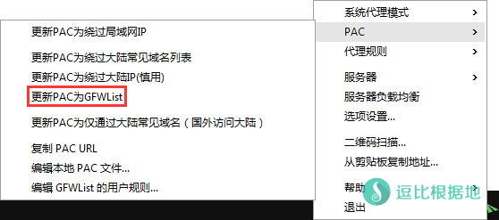

经常会遇到有人想要添加和编辑 PAC中的网址规则，但是不知道该怎么添加。
有时候访问一些网站，可能被墙或者打开很慢，于是想要让这个网站走Shadowsocks代理，但是又不想开全局模式，那么你就需要看下面这个文章了。
其实那，PAC文件就是JavaScript语法，里面有个rules的变量，储存着json格式的数组内容。
在ShadowsocksR中除了pac.txt文件以外，还会有一个 user-rule.txt 的文件（如果没有就新建一个），是单独给用户来添加网址规则的。所以我们只需要编辑这个文件就行了，毕竟pac.txt里面的内容太多，太乱。
注意，因为修改 user-rule.txt 文件后，需要点击选项 更新PAC为 GFWList 才能生效，而因为SSR项目终止，导致此功能不可用，所以下面修改 user-rule.txt 文件的方法已失效，当然可以打开 pac.txt 文件直接修改（按格式），语法规则一样。
编辑 user-rule.txt 文件
首先我们打开和Shadowsocks.exe同文件夹中的 user-rule.txt 文件，当然你也可以通过 右键Shadowsocks托盘图标 >-> PAC >-> 编辑 GFWList 的用户规则 来打开这个文件。
具体的语法我也不是特别懂，所以下面的教程只适合简单的添加和编辑。
比如你想要 ipip.net 这个网站走Shadowsocks代理，那么你就需要添加一个 ipip.net 的网址规则。
例如：
||ipip.net^
这个规则的意思是，任何以 ipip.net 为主的所有子域名包括自身，同时还有所有的互联网协议(http:// https:// ftp://)，都走Shadowsocks代理。
编辑完 user-rule.txt 文件并保存后，记得 右键Shadowsocks托盘图标 >-> PAC >-> 更新PAC为 GFWList ，否则不会生效的。

然后在浏览器中打开 www.ipip.net 可以看到 IP 已经变成Shadowsocks所用的服务器 IP 了。
注意：每一行规则末尾必须加上 ^ 符号，意思是这个规则在这个符号的地方结束。
语法规则如下：
=== 通配符支持 => * *.example.com/ 代表 http://example.com http://233.example.com https://233.example.com https://666.example.com/233.mp4 全部走代理。 同时"*"可省略，.example.com/ 与 *.example.com/ 效果是一样的 === 正则表达式支持 以 \ 开始和结束，\[\w]+:\/\/example.com\ === 例外规则 => @@ @@*.example.com/ 表示"@@"后面的网址规则(*.example.com)不走代理 如：@@www.baidu.com 表示 www.baidu.com 不走代理 === 匹配地址开始和结尾规则 => | |http://example.com、example.com| 分别表示 以http://example.com开始 和 以example.com结束 的地址 如：|http://233.com ，代表 http://233.com 开头的网址才会走代理，即 https://233.com http://1.233.com 都不会走代理 如：233.com|，代表 233.com 结尾的网站才会走代理，即 http://233.com https://233.com http://1.233.com 都会走带了，而 http://233.com/index.html 不会走代理。 === 全匹配规则 => || ||example.com 则代表 http://example.com、https://example.com、ftp://example.com 等协议的地址全部走代理 如：||233.com ，即 http://233.com、https://233.com、ftp://233.com 等地址全都走代理 === 注释规则 => ! !我是注释233 !我也是注释666
如果你实在看不懂的话，那么就直接，用 ||xxx.xxx^ 全匹配。
更多user-rule.txt语法规则，可以参考AdBlockPlus过滤规则https://adblockplus.org/zh_CN/filters
当然，如果你嫌麻烦，你可以使用 Proxy SwitchyOmega 扩展（Chrome/Opera），这个添加域名的时候可能会方便一些。
转载请超链接注明：逗比根据地 » Shadowsocks手动 添加和编辑 PAC中的网址规则
责任声明：本站一切资源仅用作交流学习，请勿用作商业或违法行为！如造成任何后果，本站概不负责！


/ncr即可禁止跳转：https://www.google.com/ncr1. 修改格式有误。
2. 你没有重启代理。
3. PAC文件被IE缓存了（清除IE浏览器及你在用的浏览器缓存）
最新PAC可以看这里：『修复』做了个GFWList PAC最新下载地址，可用于更新 SSR PC客户端的PAC